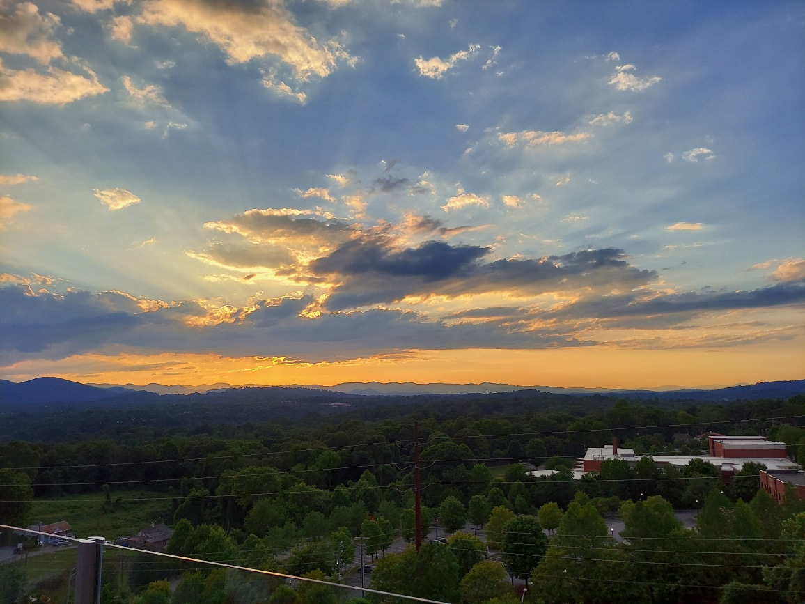
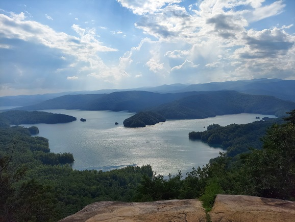

Welcome to Asheville
 Asheville was incorporated as a city on February 11, 1797. It is often considered an urban city, although it has a unique character and a mix of urban and suburban areas. It's also known for its vibrant arts scene, outdoor recreational opportunities, and historic architecture.
Asheville is famous for being the home of Biltmore Estate, which is the largest privately-owned home in the United States. Biltmore Estate was built by George Washington Vanderbilt II between 1889 and 1895. It is a stunning example of the Gilded Age architecture and encompasses 178,926 square feet, with 250 rooms, including a magnificent library, a banquet hall, and beautiful gardens.
City Details
| Detail | Statistic |
|---|---|
| Population | 97,925 |
| Median Household Income | $63,814 |